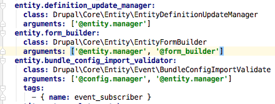
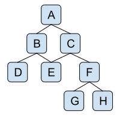

Drupal 8 and the Symfony Event Dispatcher
Eric Smith / @ericgsmith
- What is it / why it's useful
- Sending an event
- Responding to an event
Detour 1: About me
Why should you care?
No more hook_boot
No more hook_init
No more hook_exit
Events
... an event is an action or occurrence recognised by software that may be handled by the software.
Events
Something happened
What we might have done
We have a form that collects a name and email address.
- Send an email to the user
- Log the submission
- Add the user to our CRM
- Add the user to our newsletter
- Tweet their details to the company fridge
public function submitForm(array &$form, FormStateInterface $form_state) {
$name = $form_state->getValue('name');
$email = $form_state->getValue('email');
$this->mailer->mail('example', 'signup_form', $email, .... ['name' => $name]);
$this->logger->log('notice', 'Registration of interest submitted...');
$this->crmManager->subscribe($name, $email);
$this->mailChimpSubscriptionManager->add($name, $email);
$tweet = TweetFactory::create('blah blah ' . $name . ' blah blah');
$this->tweeter->tweet($tweet);
}
This is bad
- Submit method is doing too many things
- Form class knows too many things
- Hard to maintain
- Hard to reuse

Symfony Event Dispatcher

Detour 2: Service container
Service:
Any PHP object that performs some sort of "global" task.
http://symfony.com/doc/current/book/service_container.html
Dependency Injection:
Inject dependencies.
Not Dependency Injection:
public function myMethod() {
$mailer = new Mailhandler();
$mailer->send('This is bad.');
}
Dependency Injection:
protected $mailer;
public function __construct(MailHandlerInterface $mailer) {
$this->mailer = $mailer;
}
public function myMethod() {
$this->mailer->send('This is better.');
}
How it works:
Configuration
Magic
Service Container
Dispatching an event
- Static event class
- Extend the event class
- Dispatch the event
The Static Events Class
final class ExampleModuleEvents {
/** docBlock */
const SIGNUP_FORM_SUBMIT = 'module_name.signup_form_submit';
}
Extend the event class
use Symfony\Component\EventDispatcher\Event;
class SignupFormEvent extends Event {
protected $name;
protected $email;
public function __construct($name, $email) {
$this->name = $name;
$this->email = $email;
}
public function getName() { return $this->name; }
public function getEmail() { return $this->email; }
}
Dispatch the event
public function submitForm(array &$form, FormStateInterface $form_state) {
$name = $form_state->getValue('name');
$email = $form_state->getValue('email');
$event = new SignupFormEvent($name, $email);
$this->eventDispatcher->dispatch(ExampleModuleEvents::SIGNUP_FORM_SUBMIT, $event);
}
Detour 3: Forms
FormBase
- Implements FormInterface
- Implements ContainerInjectionInterface
ContainerInjectionInterface
public static function create(ContainerInterface $container) {
return new static();
}
ContainerInjectionInterface
protected $mailHandler;
public function __construct(MailHandlerInterface $mail_handler) {
$this->mailHandler = $mail_handler;
}
public static function create(ContainerInterface $container) {
return new static(
$container->get('mailhandler')
);
}
FormInterface
public function buildForm(array $form, FormStateInterface $form_state);
public function validateForm(array &$form, FormStateInterface $form_state);
public function submitForm(array &$form, FormStateInterface $form_state);
Listen for events
- Add to services.yaml
- Implement EventSubscriberInterface
- Implement getSubscribers method
services.yaml
services:
example_crm_module.crm_subscriber:
class: "Drupal\example_crm_module\EventSubscriber\CRMSubscriber"
arguments: ['@crm_manager']
tags:
- { name: event_subscriber }
Implement EventSubscriberInterface
use Symfony\Component\EventDispatcher\EventSubscriberInterface;
class CRMSubscriber implements EventSubscriberInterface {
protected $crmManager;
public function __construct($crmManager) {
$this->crmManager = $crmManager;
};
public static function getSubscribedEvents() {
$events['module_name.signup_form'][] = array('crmRegister', 0);
return $events;
}
public function crmRegister(SignupFormEvent $event) { ... }
}
public function crmRegister($event) {
$this->crmManager->subscribe($event->getName(), $event->getEmail());
}
Why is this good?
- Single Responsibility Principle
- Open / Closed
- Dependency Inversion
What is Core doing...
- hook_entity_save, delete, etc
- hook_block_view, etc
- hook_cron
- hook_install
- hook_preprocess
What is Core doing...
- ConfigEvents::DELETE, IMPORT, SAVE..
- EntityTypeEvents::CREATE, UPDATE, DELETE..
- KernelEvents::REQUEST, RESPONSE, TERMINATE..
- RoutingEvents::ALTER, DYNAMIC, ETC..
Questions?
Eric Smith / @ericgsmith